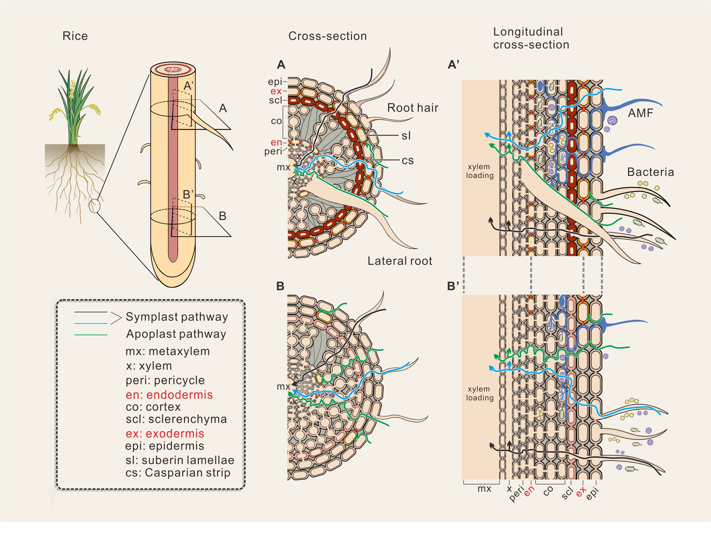
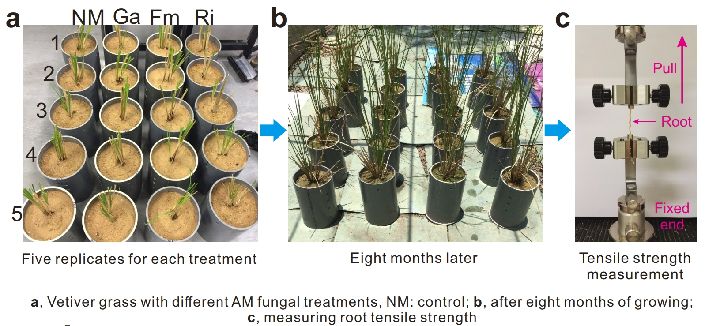
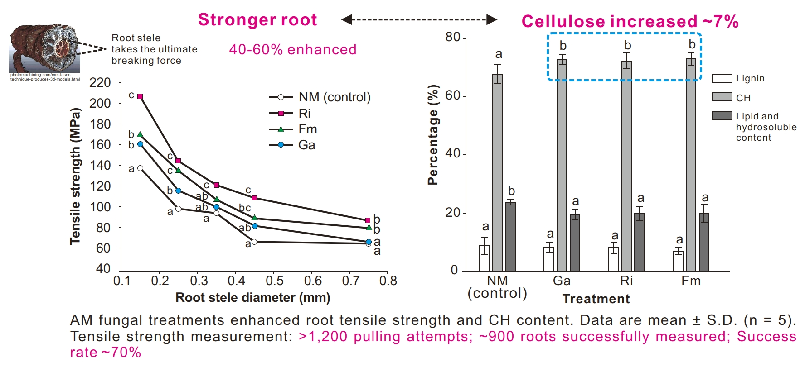
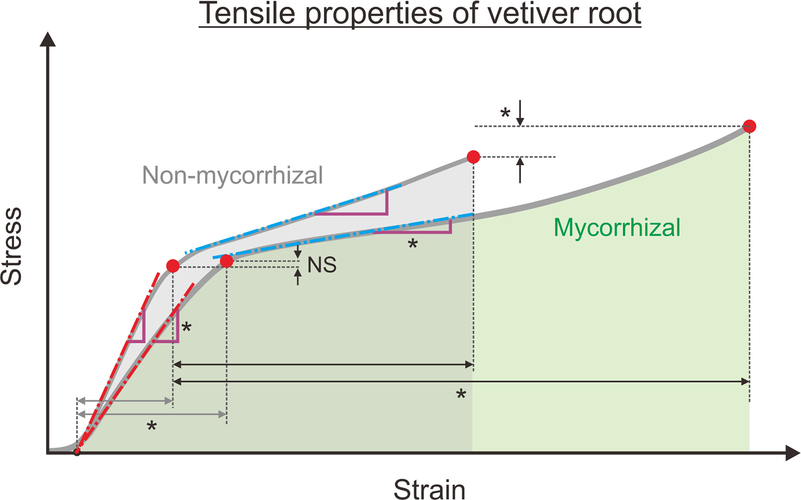

Human activities and climate change induce perturbation in ecosystems (e.g., soil microbiota), jeopardizing ecological functions. Stable soil microbial communities against perturbation underpin sustainable soil functions. My research focuses on the complex interactions between plants and microbes under stressed conditions, such as exposure to pollutants and physical stress.
Pollutant environmental behavior in plant-microbe interaction system
Plant-microbe interaction is very common and critical for natural and man-made ecosystems. The interaction is essential to stress tolerance and recovery. One of my research interest is to study how pollutants, especially cadmium, arsenic, and chromium, behave in the plant-microbe growth system.

Apoplast and symplast pathways of metal(loid) ions in the plant root with microbial colonization. Our review summarizes the role of symbiotic fungi in affecting arsenic and cadmium uptake, transport and deposition in rice. Link
Physical stress on plant-microbe interaction
Plant growth is often subjected to various physical stresses, such as soil compaction on sloping area considering the safety factor. One of my research interests is to explore how soil microbes and associated organic matters affect the plant root strength, soil aggregates, and soil hydraulic properties.

Vetiver grass roots colonized by symbiotic fungi and subjected to pulling.

More cellulose content stronger roots when colonized by symbiotic fungi. Link

Symbiotic fungi increase root toughness. Link
Predicting microbial dynamics and establishing stable community
Microbial community complexity, interaction strength among individuals, interaction diversity, and network robustness of the bacterial community underpin the stability, function, and predictability of the microbial community. The ability to maintain stable microbial communities under perturbation is crucial for ecosystem sustainability. My research work aims to understand the mechanisms underlying the stability of microbial communities in response to perturbation and to develop strategies to enhance the stability of microbial communities in ecosystems.